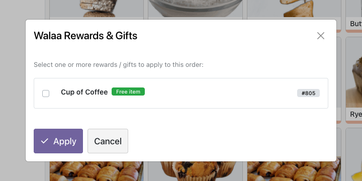
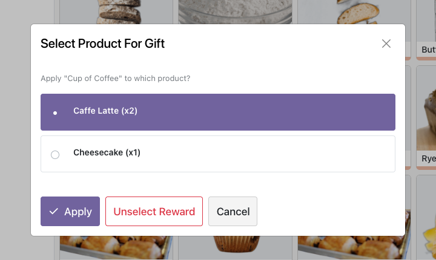
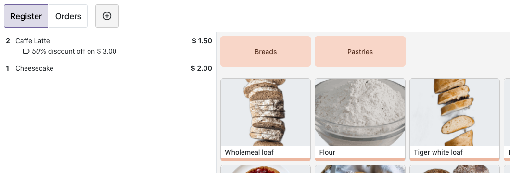
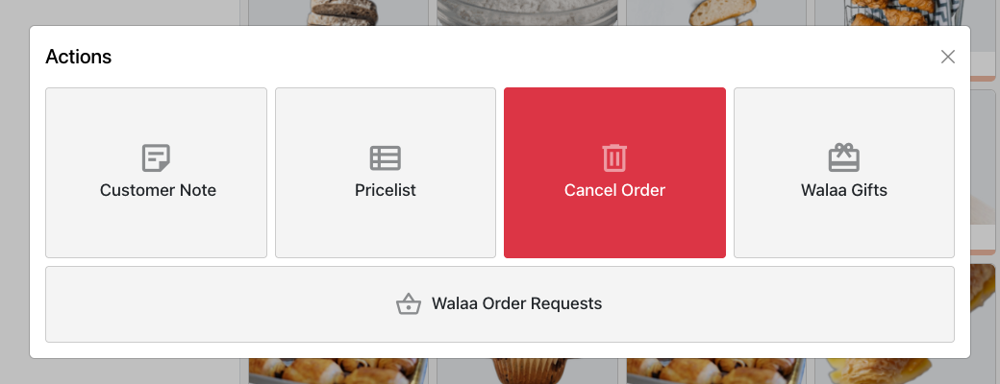
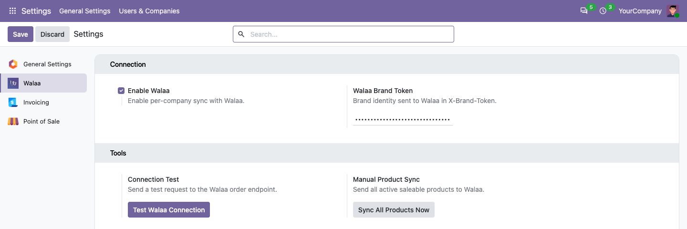

Loyal customers for every business. Connect Odoo Sales and Point of Sale to your Walaa loyalty program and reward customers automatically, with no extra work at the till.
Odoo 20 Sales Point of Sale LGPL-3
Walaa turns one-time visitors into repeat customers. Your customers keep a digital loyalty card on their phone, with no physical card to carry, and collect stamps, points and rewards every time they buy. This connector is the bridge between the tills you already run on Odoo and your Walaa program.
Paste your Walaa brand token in Settings, click Test Walaa Connection, then Sync All Products Now. That is the whole setup.
Confirm a sales order or take a payment at the POS. The order is sent to Walaa right away and the customer earns their stamps or points.
Pick a customer at the POS and their available Walaa rewards pop up. Choose the product each reward applies to and the discount is applied to the order.
Confirmed sales orders and paid POS orders are sent to Walaa the moment they happen. Customers are recognised by their phone number.
Push your whole catalog to Walaa in one click, or let Walaa pull it on demand. Prices, SKUs, categories, variants and images are included.
When a customer is selected, their unused Walaa rewards appear automatically. The cashier can apply several rewards to one order and undo one with a single click.
Free product, free item of the customer's choice among several products, or a discount (percentage or fixed amount). Each is applied to the right order line.
See the customers who asked to order through Walaa today, pick one in the POS, and the customer is assigned to the order (or created) from their phone number.
If Walaa cannot be reached, your sale or POS payment still completes. The problem is logged, and recorded on the POS order, so nothing is lost at the till.
Each company has its own switch and brand token, so every brand you run in one Odoo database is rewarded separately.

Select a customer and their Walaa rewards appear automatically.

Choose which product in the order each reward applies to.

The reward is applied to the order line straight away: here, one of two coffees is free.

Walaa Gifts and Walaa Order Requests sit in the POS Actions menu.

Setup lives in Settings: one switch, one token, and two buttons to test and sync.
Customers are identified by their phone number. Add it to the contact in international format, for example +96890000000. Spaces and dashes are ignored. Orders without a customer phone number are not rewarded.
Nothing is sent until you enable Walaa for a company. Then, over HTTPS:
| Sales and POS orders | Order number, date and totals, order lines (product, SKU, quantity, price, discount), company name, and the customer's name, email and phone. |
| Products | Id, SKU, name, sale price, cost, barcode, category, variants and image. |
| Rewards | The customer's phone number, to look up their rewards, and the rewards the cashier applied. |
The brand token is stored on the company record and is masked on screen.
Yes. The connector sends your sales to the Walaa platform, so you need a Walaa brand and its brand token. You can find out more at walaa.app.
Your sale or POS payment completes normally. The failure is written to the Odoo log and, for POS orders, saved on the order. Walaa does not retry automatically, so fix the cause for the next order.
Yes. Rewards can be changed before payment: open the rewards again, change the selection, or choose Unselect Reward.
Yes. Every company has its own Enable Walaa switch and brand token. A brand token can only be used by one company.
This listing is for Odoo 20. Use the version selector at the top of the page for Odoo 19 or Odoo 18.
Loyal customers for every business. Convert visitors into loyal customers with rewards that bring them back.